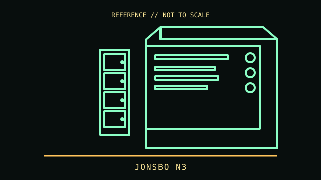

[ SMALL-FORM-FACTOR CASES // IDENTIFIED ENCLOSURE ]
JONSBO N3
2023 Mini-ITX NAS chassis. A model-specific enclosure record with physical fit limits, revision notes and manufacturer references.

IDENTIFICATION: Confirm the chassis label, model suffix, revision and regional bundle. Manufacturer maximum clearances are conditional on fan, radiator, drive-cage and cable configurations; allow room for connectors and service access.
Recorded specifications
| Cataloged model | JONSBO N3 |
|---|---|
| Era / class | 2023 Mini-ITX NAS chassis |
| Dimensions and component limits | Mini-ITX motherboard only; chassis 233 × 262 × 298 mm (W × D × H). Eight 3.5-inch drive positions with a backplane, one 2.5-inch position, two expansion slots, SFX PSU up to 105 mm, GPU length up to 250 mm and CPU cooler height up to 130 mm. |
| Revision / variant identification | JONSBO N3 is distinct from N2 and N4. Drive count does not guarantee compatibility with every backplane protocol or operating system. |
Compatibility and fit notes
This storage-focused case needs a Mini-ITX board and an SFX supply within its short length limit. Verify the exact backplane connector (SATA/SAS compatibility), cable reach, cooling and drive type before populating all bays. A 250 mm GPU and eight 3.5-inch drives compete for space and thermal headroom; confirm card thickness and airflow.
- Measure the exact GPU, CPU cooler, PSU, radiator and fan stack; nominal maximums may not be simultaneously usable.
- Check motherboard standoff locations, front-panel connectors, PSU cable routing, drive cages and expansion-slot alignment before assembly.
- Consult the applicable manual for screw locations, removable brackets, included hardware and fan/ARGB pinouts; do not force panels or boards into place.
Model-specific notes
JONSBO N3 is distinct from N2 and N4. Drive count does not guarantee compatibility with every backplane protocol or operating system.
Sources & further reading
- JONSBO — N3 product pageManufacturer specifications and product details.
- Caseking — Jonsbo N3 NAS caseEstablished specialist retailer listing; secondary reference for bay layout and dimensions.
Specifications describe the identified model family; validate the exact part number, revision and regional package against the manufacturer's manual before purchase or installation.